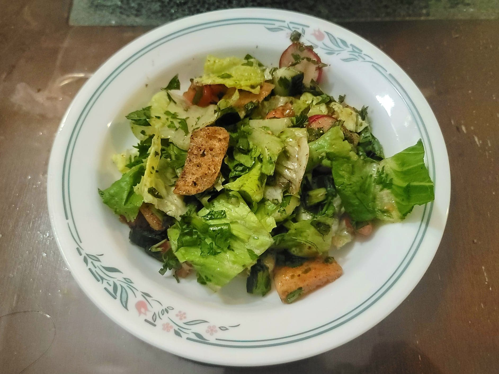

Fattoush

Ingredients:
Croutons:
- 2 loaves Pita bread, cut into squares or rectangles
- 3 tbsp Olive oil
- Salt, to taste
- Black pepper, to taste
- 1 tsp Sumac, or to taste
Salad:
- 1 head Romaine lettuce, chopped
- 5 Radishes, thinly sliced
- 5 Scallions, sliced, white + green parts
- 2 cups Parsley, chopped
- Optional: up to 1 cup Mint, chopped
- 5 Roma tomatoes, diced
- 1 lb English cucumber or Persian cucumbers, halved, seeded if english cucumber, and then sliced
Dressing:
- 1/3 cup Olive oil
- 1 Lemon, juiced
- 1-2 tbsp Pomegranate molasses
- Salt, to taste
- Pepper, to taste
- 1 tsp Sumac
- 1/4 tsp Cinnamon
- 1/8 tsp Allspice
Instructions:
- For the croutons, add the olive oil to a large pan over medium heat. Add in the pita and cook, tossing frequently, for about 5-7 minutes, or until golden and crisp. Then remove from heat and season with the salt, pepper, and sumac. Toss a final time to combine and reserve.
- For the salad, add all the ingredients to a large salad bowl and toss to combine.
- In a separate bowl, combine the dressing ingredients and whisk to combine.
- Pour the dressing over the salad and toss to combine. Then add in the croutons and toss again. Serve immediately.